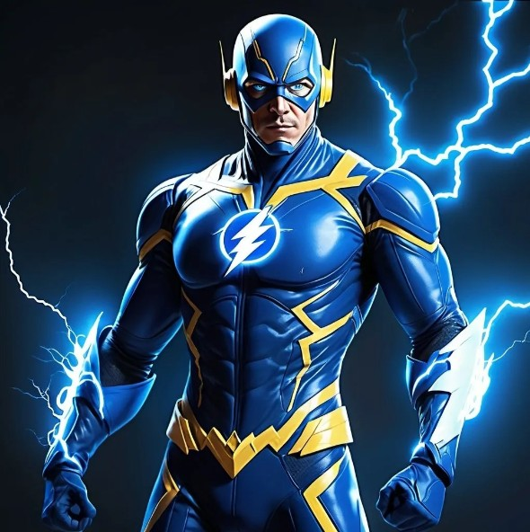

Biography
The Flash, also known as Barry Allen, is a superhero with the power of super speed. After being struck by lightning and doused in chemicals, Barry gained access to the Speed Force, allowing him to move at incredible velocities. As a forensic scientist by day and a superhero by night, Barry uses his abilities to protect Central City from various villains.
Powers and Abilities
- Super Speed: The Flash can run at incredible speeds, far beyond the speed of sound and light.
- Time Travel: By running fast enough, The Flash can travel through time and into alternate dimensions.
- Enhanced Reflexes: His super speed gives him reaction times faster than any human, allowing him to dodge attacks and react instantly to danger.
- Phasing: By vibrating his molecules, The Flash can phase through solid objects.
Affiliations
The Flash is a core member of the Justice League, working alongside heroes such as Superman, Batman, and Wonder Woman. He is also closely connected to other speedsters like Kid Flash and Jay Garrick, the original Flash. His commitment to protecting Central City and the world makes him one of the DC Universe's most iconic heroes.